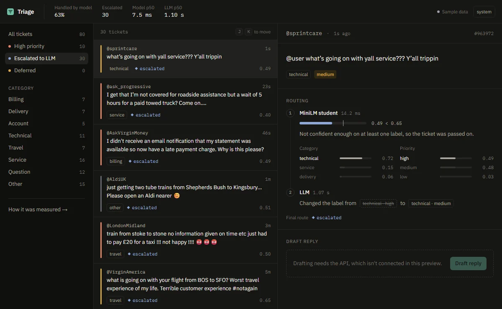

Triage
Support-ticket router, small model + LLM · Python · TypeScript · live
A support inbox that sorts every ticket by team and urgency. A small model I fine-tuned handles the easy ones in milliseconds; only the tickets it is unsure about go to an LLM, and the ticket shows why.
57%of tickets never reach the LLM80.7%accuracy, vs 81.0% LLM-only8 msper ticket on one CPU core23 MBmodel after int8
How it works
- Distilled, then calibrated: MiniLM fine-tuned on 18,000 real support tweets labelled by an LLM, with two heads (team and urgency); temperature scaling cut calibration error from 0.108 to 0.066, so its confidence can decide when to escalate.
- Fixed a real export bug: the int8 ONNX model matched PyTorch on only 92% of tickets; the old exporter had baked the sequence length into the mask. Moving to the new exporter brought it back in line.
- Built like a service: BullMQ queue on Redis, live updates over WebSockets, a circuit breaker when the LLM quota runs out, and a Next.js dashboard with a results page. Tried a reranker and request batching, measured both, and dropped both.
Python · PyTorch · ONNX Runtime · FastAPI · Gemini API · Node.js · BullMQ · Redis · WebSockets · Next.js · TypeScript · Playwright
Results and design decisions →